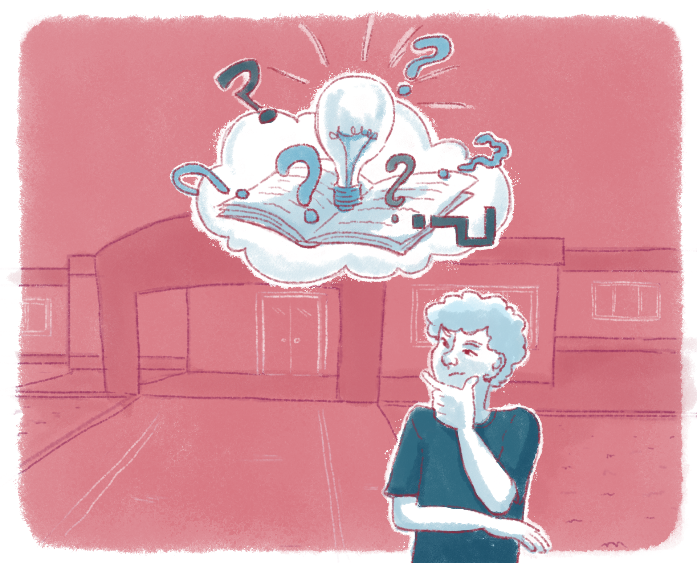

Construindo caminhos para responder à questão levantada
A escolha dos caminhos e dos procedimentos operacionais a serem utilizados para a construção das respostas ao problema por você levantado, no desenvolvimento do seu Plano de Formação, exige sua especial atenção.
Para trilhar esse caminho, você precisa partir da realidade prática em que se encontra e buscar, nos fundamentos teóricos desenvolvidos nas diversas unidades temáticas deste curso, o auxílio para a reflexão destinada a ressignificar a sua prática.
Refletir de forma mais aprofundada sobre as relações estabelecidas no contexto educacional, investigá-las e mostrar seus diferentes significados permite compreender a complexa realidade em suas múltiplas determinações, assim como exige a incorporação de conceitos de diferentes campos, como a história, a economia, a psicologia, a sociologia, a antropologia etc. Esses distintos enraizamentos teóricos, que enriquecem a investigação em educação, refletem-se nos aspectos procedimentais quando se busca, no processo de sínteses provisórias , a ressignificação coletiva e uma ação transformadora.

Título: Refletindo sobre seu contexto educacional: relações entre a teoria estudada e a prática vivenciada
Fonte: Prosa (2024e).
Em educação, a articulação entre as concepções de homem, de sociedade, de história e de realidade evidencia o ser humano enquanto produtor de conhecimentos em uma sociedade em constante transformação, com continuidades e rupturas.
Assim sendo, a realidade precisa ser compreendida a partir do movimento dialético que se manifesta nas múltiplas e contraditórias relações entre os sujeitos envolvidos num determinado espaço histórico, econômico, geopolítico e sociocultural.